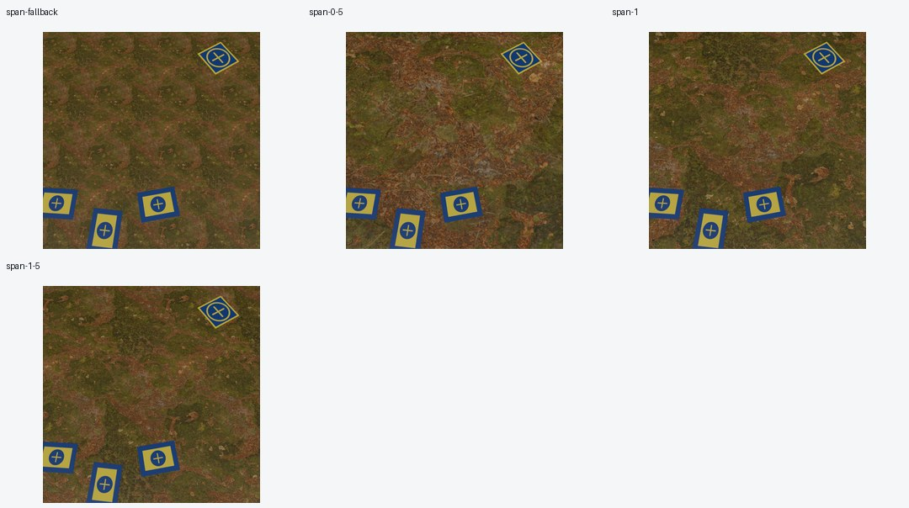
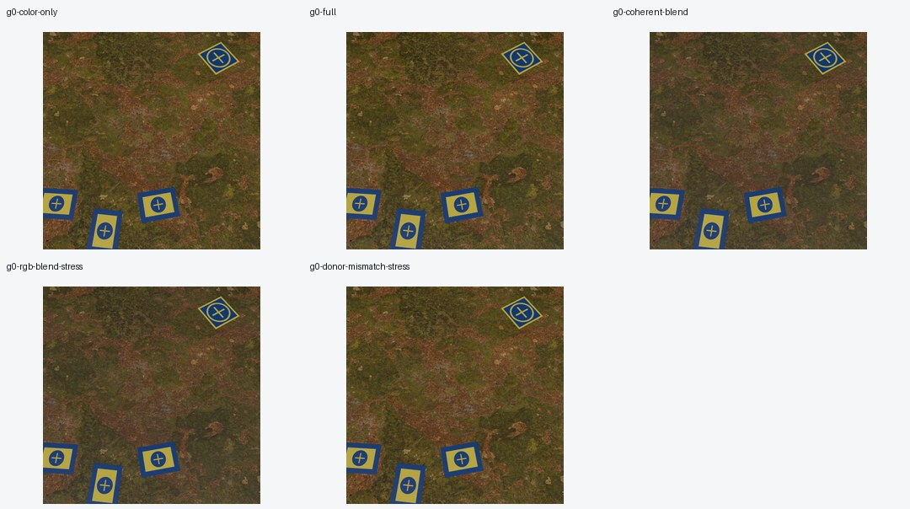
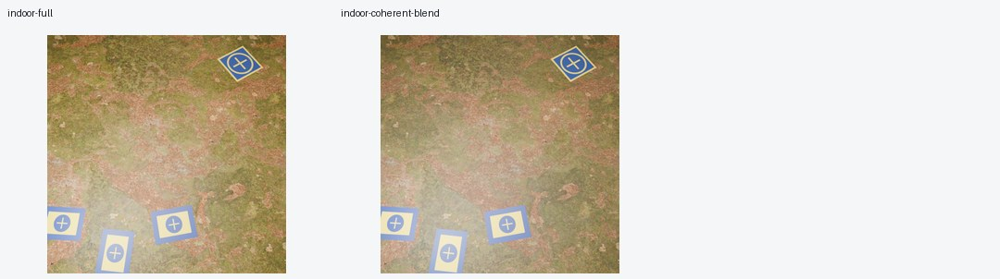
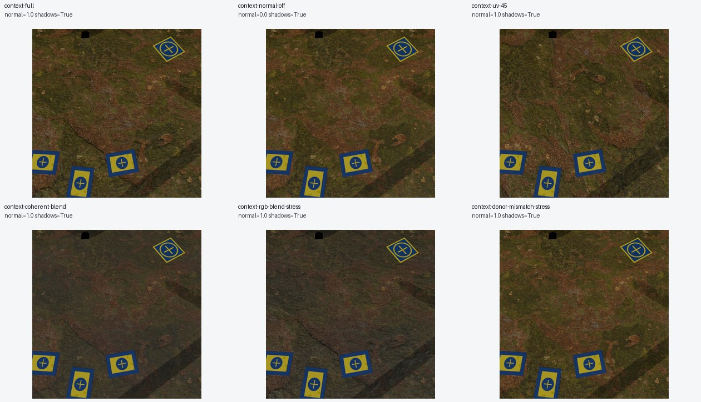
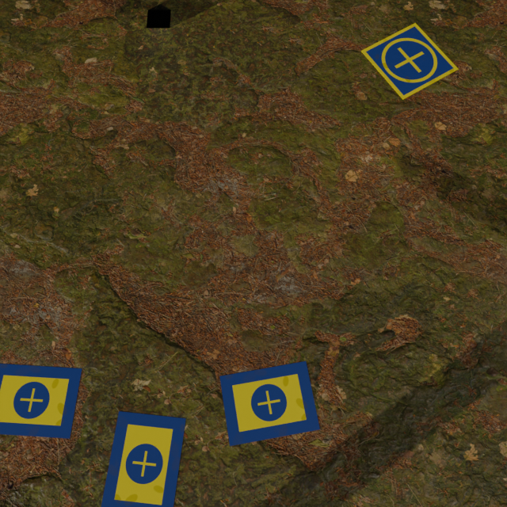
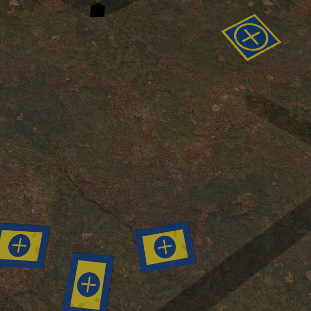

DATASET GENERATOR M1 · CONTROLLED ENGINEERING SCREEN · 29 OCTOBER 2026
Ground scale, sunlight and material variation
Independent ground scaling fixes the obvious repetition in the fallback. Coherent UV variation and material blending add diversity; this small screen does not qualify photographic realism or detector performance.
These cells reuse two reference scenes. Four additional local renders diagnose UV behavior. Both GPU archives were verified and both runtimes shut down automatically.
Repetition is a configuration choice
The fallback uses a two-metre tile. Independent ground_mapping now controls view-relative scale without requiring camera-angle sampling. Lower spans reveal less of the source texture and enlarge its features; this does not calibrate physical feature sizes or guarantee an absence of repeated boundaries.

Maps work, but their visibility depends on context
Color, roughness and normal maps are connected. In the first screen, removing the material maps changes ground pixels by about 0.60–1.95 levels out of 255. Blending changes color more strongly; synchronized and RGB-only blending look close under these conditions.

Indoor diagnostic
The indoor pair shares grass to isolate light/material behavior. It has both an explicit area light and the pilot ceiling light. Bright pools still wash out labels; this is not an ordinary indoor-family recommendation.


Stronger variants with wear and cast shadows
Six matched cells hold pad wear, three casters and directional SUN lighting fixed. Here the panels are 5 mm thick. The sharp, consistently directed shadows are intended distractors. The dark caster-related square near the frame edge needs visual review.

Reveal the coherent blend


The slider reveals two finished images; it does not interpolate material strength.
Ground pixel change from full maps
| Variant | RGB MAE / 255 |
|---|---|
| Normals disabled | 4.64 |
| UV 45° + offset | 13.03 |
| Coherent blend, amount 1 | 9.06 |
| RGB-only blend, amount 1 | 9.25 |
| Donor roughness/normal mismatch | 5.18 |
Coherent vs RGB-only differs by 2.92 levels on the ground. Pad changes are smaller: 0.25–0.87 levels. These are differences, not quality scores.
What to use next
Use coherent UV movement as an inexpensive diversity control, and retain real map sets for contexts where their response matters. Coherent blending is the preferred candidate for material-consistent experiments. Keep RGB-only and donor-mismatch treatments explicitly experimental; none is automatically promoted into the production appearance distribution.
The next realism work remains environment-appropriate material selection and better indoor light/material distributions. This study mainly changes ground and context; it does not establish improved plastic-pad reflections. True displacement, independent transforms per map and real-data/model evaluation remain open.